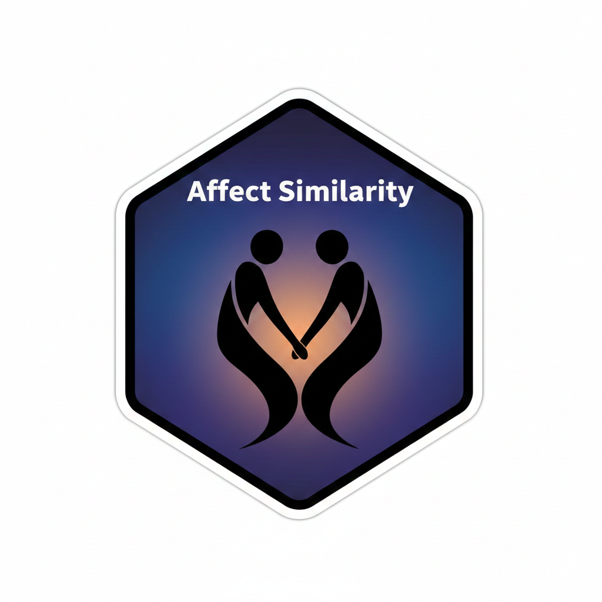

OSF project
The preregistered project and accompanying registration materials are available via the Open Science Framework.

Public index page for the pre-rendered HTML reports accompanying the reproducible analysis and reporting code for the internship project on actual and perceived affect similarity in romantic couples.
This repository contains analysis and reporting code accompanying the preregistered project Feeling the Same, Seeing the Same. The broader aim is to investigate actual and perceived affect similarity in romantic couples across daily life and laboratory interaction contexts, and to examine how similarity relates to relational outcomes such as love and closeness.
The pages linked below are pre-rendered HTML outputs intended for direct online viewing. They complement the fully reproducible project structure in the repository, where scripts, Quarto source files, and the package environment are documented separately.
The preregistered project and accompanying registration materials are available via the Open Science Framework.
The repository README provides the project overview, setup instructions, reproducibility details, and directory structure.
A PDF copy of the preregistration is provided here for direct reading alongside the project website and rendered reports.
These pages are the pre-rendered HTML outputs generated from the reproducible Quarto source files in the repository.
Descriptive summaries of the data, including sample characteristics and descriptive statistics relevant to the study.
Open reportAnalyses corresponding to the first study component and its preregistered research questions.
Open reportAnalyses corresponding to the second study component and its preregistered research questions.
Open reportAdditional response surface analyses extending the main reports with model-based visual and analytic examination of congruence patterns.
Open reportThese PDF presentations provide a visual overview of the hypothesized relationships in the study components, an overview of the hypotheses a summaries of the results, interpretation, and conclusions based on the analyses above.
The project is organised so that the codebase remains reproducible while this HTML page (in the docs/ folder of the project) provides a browsable public website. The documents shown here are pre-rendered HTML outputs generated from the Quarto source files in the repository, which can be re-rendered and updated as needed.
In the repository, the Quarto source files live in scripts/, rendered outputs are generated into outputs/scripts/, and the public-facing pre-rendered copies have been placed in docs/ for hosting through GitHub Pages.
scripts/: source .qmd and .R filesoutputs/scripts/: rendered analysis outputs produced from the source filesdocs/: pre-rendered HTML files plus this index page for public viewing